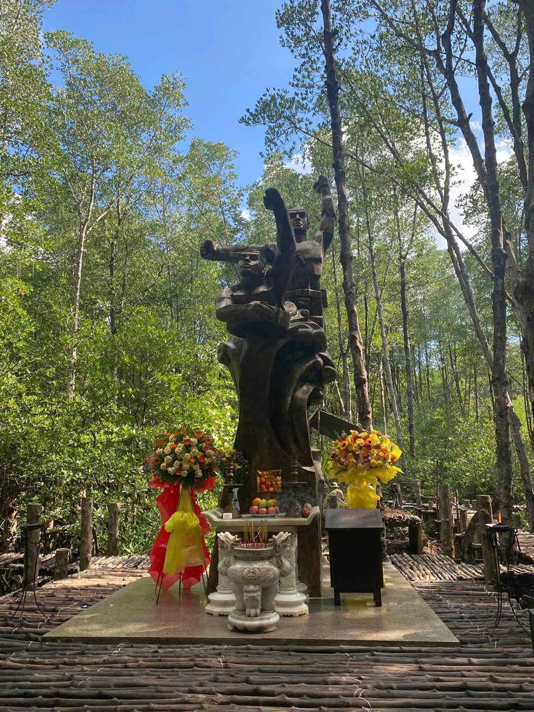

Di tích lịch sử quan trọng, nơi chứng kiến nhiều cuộc đấu tranh anh dũng.
- Từ lâu đời, Ngã Ba Giồng là 1 địa danh có tên gọi dân gian đã đi vào lịch sử của quê hương 18 thôn vườn trầu Hóc Môn – Bà Điểm. Tục truyền rằng xưa kia nơi đây là 1 vùng đất giồng tương đối cao ráo và là nơi mọc nhiều cây bằng lăng nên địa danh tên gốc là Ngã Ba Giồng Bằng Lăng, sau gọi là Ngã Ba Giồng.
- Đây là nơi gắn liền với những trang sử oai hùng của dân tộc, biểu trưng cho tinh thần quật cường, ý chí bất khuất của dân tộc ta. Địa danh này đã trở thành niềm tự hào to lớn của người dân Hóc Môn nói riêng và toàn thể nhân dân nước Việt nói chung.
- Để ghi nhớ công ơn và thể hiện lòng biết ơn của mình đối với những người chiến sĩ anh dũng hy sinh để đổi lấy màu xanh cho đất nước, tại đây người dân và chính quyền đã cho xây dựng khu tưởng niệm Liệt sĩ Ngã Ba Giồng với quy mô trang trọng, uy nghiêm. Khu tưởng niệm bao gồm có nhà bia tưởng niệm, tượng đài chiến thắng, nhà trưng bày hiện vật,….
- Bước vào Đền thiêng thắp nén hương trầm để tưởng niệm Chủ Tịch Hồ Chí Minh và tri ân các anh hùng liệt sỹ, đồng bào đã ngã xuống vì độc lập tự do dân tộc. Ta sẽ cảm nhận sự uy nghiêm, trang trọng và trên hết là sự linh thiêng trong từng hồi chuông trống. Cảm nhận từng lớp da, thớ thịt, từng giọt máu chảy trong con người của những người con đất Việt như đang hướng về nguồn cội, về tinh thần đấu tranh kiên cường của nghĩa quân và nhân dân Nam Kỳ, khí phách anh dũng quật cường của các chiến sỹ cách mạng.
Một tượng trong cụm tượng đài Bất Khuất chùm tượng đài về tinh thần kháng chiến của người dân Nam Kỳ.
Cột cờ được đặt trang trọng giữa khuôn viên.
Toàn cảnh khu tưởng niệm nhìn từ trên cao.
Không gian tưởng niệm trong Khu di tích Ngã Ba Giồng,nơi ghi dấu sự hy sinh của nhiều chiến sĩ cách mạng trong thời kỳ kháng chiến chống Pháp.
Ngày 30-12-2002, theo Quyết định số 39/QĐ-BVHTT, khu tưởng niệm Liệt sĩ Ngã Ba Giồng được Bộ Văn hóa và Thông tin (nay là Bộ Văn hóa, Thể thao và Du lịch) xếp hạng là di tích lịch sử quốc gia.
Bức tường có khắc dòng chữ SỐNG VĨ ĐẠI CHẾT VINH QUANG để tôn vinh tinh thần chiến đấu, lòng yêu nước và sự hy sinh cao cả của những người anh hùng.
Số 1460 đường Phan Văn Hớn, ấp 5, xã Xuân Thới Thượng, huyện Hóc Môn, Thành phố Hồ Chí Minh.
Chúng em là tổ 1, cùng nhau thực hiện trang web này để tôn vinh lịch sử dân tộc.